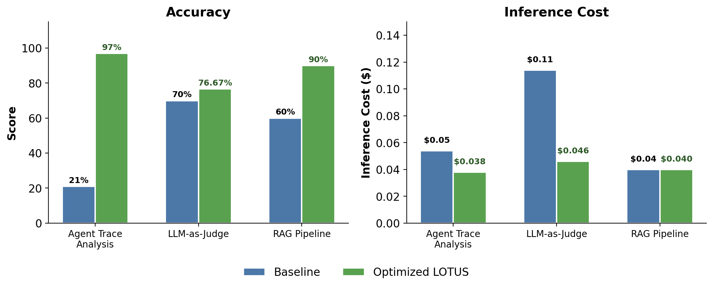
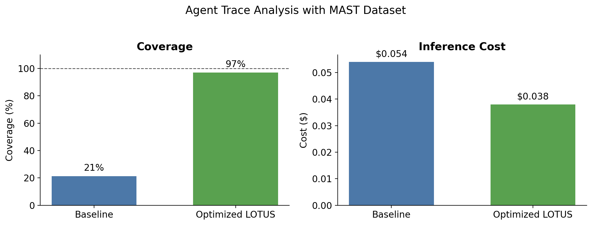
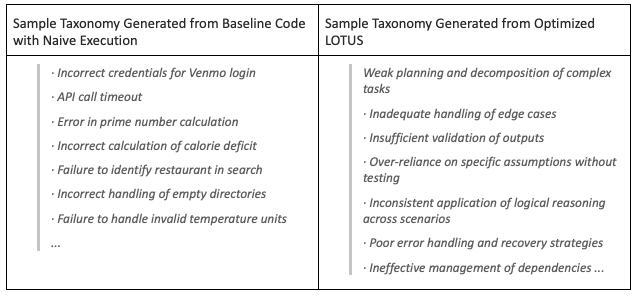
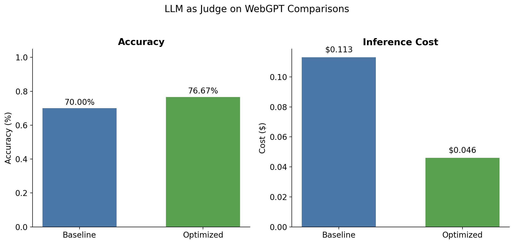
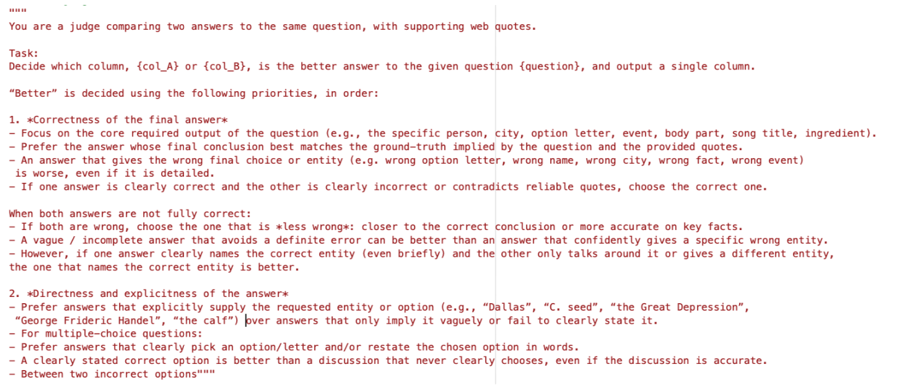
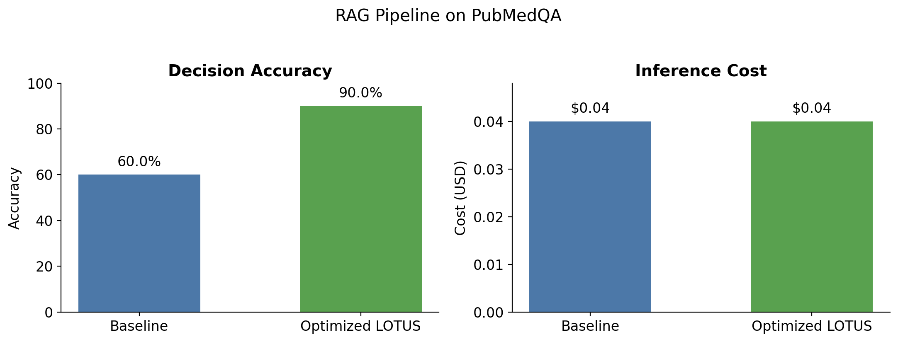
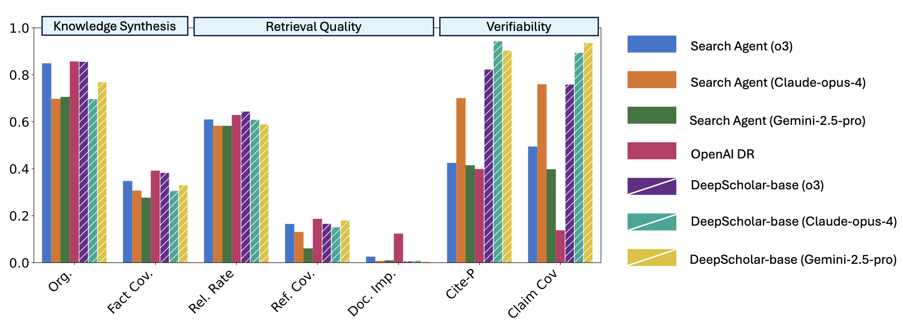

Links
- Repo
- github.com/lotus-data/lotus
- Benchmarks
- lotus-data/lotus/benchmarks
- Paper Reference
- Semantic operators (arXiv:2407.11418)
- Discord
- LOTUS community
We’re excited to share our release of LOTUSPlan, LOTUS’ new API for optimized LLM-based data processing via lazy execution of semantic operator programs.
Over a year ago LOTUS introduced semantic operators, a declarative programming model for LLM-based data programming. LOTUSPlan represents the next evolution of the LOTUS API toward making LLM-based data processing easier, cheaper, and more accurate. LOTUSPlan brings global planning and lazy execution for your LLM queries, leveraging our suite of optimizers (which now includes your favorite text optimizers like DSPy's GEPA) to achieve state-of-the-art performance. The LOTUS API lets you seamlessly switch between eager execution (great for fast development and debugging) and lazy execution (for significantly optimized performance), giving you the best of both worlds.
The results: up to 2.4× cost reduction and up to 4.6× higher accuracy for LLM-based processing across diverse tasks, like agent trace analysis, LLM-judge evals and RAG.

In this blog, we’ll take you through what’s new in LOTUS and see the system in action with very exciting results on:
LOTUS has been developed at Stanford and UC Berkeley, and it is deployed in DeepScholar’s DeepScholar Research Preview since Winter 2025, where it has served over 10K DeepResearch queries and thousands of users within its first 3 months of release. The LOTUS framework makes processing large datasets with LLMs efficient and accurate, allowing even resource-constrained teams to scale their LLM-based processing pipelines.
Visit our GitHub repo and get started with LOTUS here: https://github.com/lotus-data/lotus. We’ve also made all benchmark code available for the community so that folks can build off of this work.
Background: Why LLM-Based Data Processing Needs New Primitives
Over the past few years, we have been seeing a new set of workloads, which require our AI systems to scale over increasingly massive datasets. Whether it’s a DeepResearch agent synthesizing hundreds of papers, a large scale LLM-Judge evaluation, or complex document extraction, these workloads—which we call semantic bulk processing—share a common challenge: they require processing large amounts of data, often in complex parallel or recursive patterns.
Over a year ago, our research introduced semantic operators to serve these tasks. Semantic operators are declarative primitives for LLM-based data processing (e.g., LLM-based semantic filtering, mapping, aggregations and joins)—each operator implements a transformation over unstructured datasets and can be optimized with accuracy guarantees. Conceptually, we view semantic operators through two complementary lenses:
- The evolution of relational operators for AI-powered data processing: akin to how relational operators in SQL transformed structured data processing by decoupling application logic from the systems underlying storage and execution, semantic operators are the analog for declarative LLM-based data programming. Semantic operators create a huge design space for optimizations (e.g., 1000× speedups in our experiments!), and these optimizations are performed with accuracy guarantees with respect to well-defined reference algorithms, making their execution behavior robust, similar to traditional query optimizers.
- A superset of RAG: Traditional RAG systems are implemented with two key primitives:
search()for retrieving relevant context andLM()invocations for summarization. Semantic operators implement these primitives as well as a far richer set of transformations, allowing you (and more importantly, your agents) to build pipelines that are more expressive and powerful (as we'll see in a bit!).
We’ve been excited to see a lot of early adoption of semantic operators among users, researchers in the community, and within industry—and we think these primitives are going to be essential, especially as we continue to scale the amount of data we’d like our AI systems and agents to digest.
Let’s try out semantic operators in LOTUS
If you’re new to LOTUS, here’s a small example to illustrate semantic operators in action. Let’s use LOTUS to filter through our dataset of GitHub issues to find ones that are good for first-time contributors.
First let’s do some basic setup. We’ll configure our model and we’ll create a small dataset, which we create as a standard pandas DataFrame with a single column issue_title, listing GitHub-style issues.
import pandas as pd
import lotus
from lotus.models import LM
# 1. Configure the LM — export your API key before running (e.g. OPENAI_API_KEY)
lm = LM(model="gpt-4.1-nano")
lotus.settings.configure(lm=lm)
# 2. Load data — sample GitHub-style issue titles
issues = pd.DataFrame({
"issue_title": [
"Fix typo in README",
"Add dark mode support to dashboard",
"Refactor entire auth system to use OAuth2",
"Update copyright year in LICENSE",
"Implement distributed transaction support across microservices",
"Change button color on settings page",
"Migrate database from Postgres 13 to 16 with zero downtime",
"Add missing comma in error message",
"Build custom query planner to replace third-party dependency",
"Bump lodash to fix known CVE",
"Support multi-region active-active replication",
"Remove unused import in utils.py",
]
})Since we want to perform a language-based filtering operation, we’ll use LOTUS’ sem_filter operator. This is a simple program in LOTUS. When we call sem_filter on our dataset, we pass a natural-language expression (langex) to the operator—for semantic filters, that instruction is written as a predicate that can be logically evaluated with a boolean value. The langex places the dataset attributes (here, issue_title) in curly brackets to specify that we want to pass it as context.
# 3. Run LOTUS program — sem_filter
good_first_issues = issues.sem_filter(
"The {issue_title} describes a small, self-contained task that a new open "
"source contributor could tackle without deep knowledge of the codebase"
)LOTUS offers an expansive set of semantic operators. Each one takes a natural-language parameter, implements a specific data transformation, and can be optimized in LOTUS with accuracy guarantees with respect to well-defined reference algorithms. Below we highlight some key semantic operators:
| Operator | Purpose | Parameters |
|---|---|---|
sem_filter | Filters a dataset based on a natural language predicate, returning entities that satisfy the predicate. | Natural language predicate |
sem_map | Projects a dataset based on a natural language instruction, returning an attribute for each entity. | Natural language projection |
sem_join | Join two datasets according to a natural language predicate. | Natural language predicate and the table to join with |
sem_agg | Performs a many-to-one aggregation, generating a single answer from multiple entities. | Natural language aggregator |
sem_topk | Performs a ranking based on the natural language instruction. | Natural language comparator: how to rank any two inputs |
sem_search | Perform embedding-based semantic search. | Query and K items to return |
The LOTUSPlan API
The LOTUSPlan API is a significant evolution of the LOTUS framework designed to make LLM-based data processing more performant and easy through declarative optimization. It bridges the gap between the flexibility of Python and the performance of a compiled query engine.
LOTUS now allows you to switch seamlessly between two modes of execution:
- Eager execution is perfect for iterative development, exploratory data analysis, and prototyping multi-step LLM programs. You write a semantic query, and execute it immediately on your data—just like standard pandas.
- Lazy execution delivers performance with state-of-the-art optimizers. By wrapping your logic in a LOTUS
LazyFrame, you allow LOTUS to see the “whole picture”—under the hood the engine creates an abstract syntax tree (AST) that can be globally optimized before executing your final program.
The new LOTUS LazyFrame module allows you to chain arbitrary semantic operators and pandas operators together, before calling .optimize() and .execute(). Under the hood, LOTUS constructs the AST as soon as you declare your LOTUS pipeline. The AST defines the logical plan for your LLM program, where each semantic operator is represented by a single node, specified by an LLM and natural language prompt used for that operator’s execution.
When you call .optimize() over your program, LOTUS can rewrite the AST logic—for example reordering operators, performing prompt optimization, or substituting expensive model calls for cheaper ones using model cascades.
.optimize(), and then run by the execution engine—dispatching each operator to the appropriate LLMs and embedding models.We’ve designed LOTUS to modularly support custom optimizers, so that as new ones become available, we can seamlessly support them (let us know what optimizers you’d like us to support next!). In addition to always-on optimizers (e.g., operator reordering), LOTUS currently supports two key custom optimizers:
- GEPA optimizer: GEPA is a state-of-the-art prompt optimizer, which allows you to specify a small labeled dataset and rewrites all prompt instructions to optimize your accuracy metric. LOTUS allows you to leverage GEPA for optimizing any semantic operator.
- Cascade optimizer: The cascade optimizer leads to significant cost reduction by routing examples to a cheap proxy model when possible. Crucially, this optimizer provides statistical accuracy guarantees, allowing you to tune your targets (like recall and precision for semantic filters) for your specific application to control cost while maintaining accuracy. Cascades can be used to optimize semantic filters, semantic joins, and pairwise LLM-judges in LOTUS.
Lazy execution in three steps
Earlier, we saw how to write a simple semantic filter program using LOTUS’ eager execution API. Now let’s look at how we can write the same program using the LOTUSPlan API. We can migrate from the eager version of the code in three essential steps.
First we define our pipeline, using the LazyFrame() class to wrap our semantic operator program. Using the LOTUS LazyFrame API, you can chain an arbitrary number of semantic operators and traditional pandas operators (e.g., .filter(), .assign(), .head()) to construct your pipeline. Then we call LOTUS’ .optimize() on our pipeline, where we pass our choice of optimizers and training data. Finally, we execute our pipeline with .execute() for fast and accurate LLM-based processing.
from lotus.ast import LazyFrame
from lotus.ast.optimizer import GEPAOptimizer, CascadeOptimizer
# Step 1: Build a LOTUS pipeline — nothing executes yet
pipeline = LazyFrame().sem_filter(
"The {issue_title} describes a small, self-contained task that a new open "
"source contributor could tackle without deep knowledge of the codebase"
)
# Step 2: Optimize — pass optimizers of choice and training dataset here
optimized = pipeline.optimize(...)
# Step 3: Execute the optimized pipeline on our dataset
res = optimized.execute(df)LOTUS’ LazyFrame API also provides several utilities. You can always use .print_tree() to inspect the AST that LOTUS built under the hood. The .save() and .load() utilities make it easy to save the optimized state for your LOTUS program, then load it back in future sessions.
# Inspect the execution plan
optimized.print_tree()
# Save the optimized LOTUS pipeline
optimized.save("optimized_lf.pkl")
# Load the pipeline during a later session
pipeline.load("optimized_lf.pkl")Exciting results
1. Agent trace analysis
Agent traces are an absolute gold mine for understanding systematic failure modes of the system that allow us to continually iterate and improve the agent. Unfortunately, manual analysis of agent traces is slow and painstaking, creating a critical bottleneck in development cycles.
We’re excited to find that using LOTUSPlan we automate this processing by optimizing a simple semantic operator program to reach near-human level coverage performance while also minimizing the cost of LLM-based inference.

Task & dataset: We perform our analysis using the MAST dataset, which consists of agent traces over many popular benchmark tasks, including GAIA, GSM, ProgramDev, and SWE-Bench. The MAST dataset includes hundreds of traces, along with a taxonomy of systematic failure modes developed through human annotations and analysis. We consider the task of automatically creating a systematic taxonomy of agent failure modes across 100 traces. To assess the quality of the generated failure-mode taxonomy, we compute the coverage score, which measures the fraction of expert-annotated failed traces that are described by at least one category within the failure taxonomy.
Deep dive: With LOTUS, the entire pipeline for discovering failure modes from our agent trace dataset is two operators: sem_filter to find traces with failure modes, and sem_agg to synthesize a taxonomy across them.
The naive execution of this code with gpt-4o-mini gets us a meager 21% coverage score:
failure_mode_discovery = (
LazyFrame()
.sem_filter("the agent failed in {agent_trace}")
.sem_agg(
"given each {agent_trace}, create a bullet point list of failure modes. "
"each failure mode should be a few words."
)
)Fortunately, LOTUSPlan can help us significantly improve both accuracy and inference cost. We run the LOTUS optimizer below, which leverages both (a) the CascadeOptimizer to reduce inference cost with accuracy guarantees by learning when to route easy examples to a cheaper model (gpt-4.1-nano in this experiment), and (b) GEPA for prompt optimization of each semantic operator. The resulting execution now saturates accuracy, with a score of 97%, and reduces the inference cost to under $0.04.
optimized = failure_mode_discovery.optimize(
[
GEPAOptimizer(eval_fn=calculate_coverage, objective="Optimize for coverage"),
CascadeOptimizer(),
],
train_data=train_df,
)
result = optimized.execute(test_df)Let’s take a quick peek at the resulting failure mode taxonomies generated from naive execution and the optimized LOTUS code. In the figure below on the left, we see the taxonomy generated by the unoptimized code. Even though these failure modes look reasonable, they are task-specific failures tied to individual traces and fail to abstract a systematic taxonomy across all traces, which leads to the low coverage score. On the other hand, the optimized LOTUS code results in a systematic taxonomy that represents meaningful clusters that transfer across agent systems, explaining why they achieve 97% coverage vs 21%. In this analysis we optimized our program for coverage, although the LOTUS optimizer with GEPA is general to any user-defined evaluation function, making it easy to optimize any metric.

2. LLM-judge evaluations
LLM-judges are an essential part of the evaluation toolkit for a variety of complex, open-ended tasks, from question-answering, to deep research, and much more. Unfortunately, robust LLM-based evals are difficult and expensive due to the cost of high-quality model judges and prompt sensitivity, which makes reliability inherently brittle.
To bridge this gap, LOTUS is now making LLM-judge evals easier, cheaper, and more accurate than ever before with our llm-evals subpackage, which integrates seamlessly with LOTUSPlan.

Task & dataset: We consider the pairwise-judge task, where the LLM must compare two candidate responses (final answer and support quotes) for a given question, and indicate which response is preferable. We use the WebGPT Comparisons dataset, which consists of questions along with two candidate answers (answer_0 and answer_1) and supporting quotes (quotes_0 and quotes_1). Each question-answer pair includes human preference annotations (score_0 and score_1) indicating ground truth quality.
| question | answer_0 | quotes_0 | score_0 | answer_1 | quotes_1 | score_1 |
|---|---|---|---|---|---|---|
| Voiced by Harry Shearer, what Simpsons character was modeled after Ted Koppel? | The Simpsons character that was possibly based on Ted Koppel is Kent Brockman. | {"title":["Kent Brockman (en.wikipedia.org)"],"extract":["Kent Brockman is a fictional…"]} |
1 | Apu Nahasapeemapetilon is a recurring character in The Simpsons… | {"title":["Apu Nahasapeemapetilon (en.wikipedia.org)"],"extract":["Apu Nahasapeemapetilon…"]} |
−1 |
How it works: LOTUSPlan significantly improved both accuracy and inference cost. The CascadeOptimizer helps with cost reduction, allowing us to route 85% of calls to the proxy model (gpt-4.1-mini)—driving the 5.3× cost reduction from $0.224 to $0.042, while providing accuracy guarantees that prevent performance degradation. Here is the code for the LOTUSPlan query:
pairwise_judge = (
LazyFrame()
.pairwise_judge(
col1="answer_0",
col2="answer_1",
judge_instruction=(
"For the given {question}, which answer is better: {answer_0} supported by {quotes_0} "
"or {answer_1} supported by {quotes_1}?"
),
)
)
def calculate_accuracy(output_df):
return (output_df["_judge_0"] == output_df["true_score"]).mean()
optimized = pairwise_judge.optimize(
[
GEPAOptimizer(eval_fn=calculate_accuracy, objective="Maximize the accuracy"),
CascadeOptimizer(),
],
train_data=train_df,
)
result = optimized.execute(test_df)In addition to the CascadeOptimizer for cost reduction, GEPA improves accuracy via prompt optimization—the user program provided a simple, high-level langex to specify the pairwise judge, and using GEPA, LOTUSPlan performs data-driven optimization to enhance the prompt into a structured, priority-ordered rubric, shown below. That structured rubric gives the LLM a systematic framework to analyze each response pair, leading to consistent and aligned judgments.

3. RAG
LOTUS supports a wide range of data-intensive AI workloads. Among these, Retrieval-Augmented Generation (RAG) is one of the simplest and most elegant applications, and it remains a central paradigm for question answering over large knowledge corpora. Notably, semantic operators generalize RAG, providing a superset of data transformation, including both embedding- and LLM-based operations, for rich data programs that are more expressive and powerful. Nevertheless, here we demonstrate that even for relatively simple RAG pipelines, LOTUSPlan provides a powerful optimizer for higher accuracy RAG!
RAG is Simple With LOTUS
LOTUS makes it super easy to build RAG pipelines with any data. As we see in the example program below, RAG is a simple two-operator pipeline consisting of search() followed by a semantic aggregation to answer the query using the retrieved data. Here, we perform web_search, but LOTUS also supports a wide variety of search functionality, including embedding-based similarity search performed locally or using a vector database, as well as connectors to many web search engines.
from lotus import web_search, WebSearchCorpus
query = "Does metformin reduce cancer risk in diabetic patients?"
# Search PubMed for relevant papers
evidence_df = web_search(corpus=WebSearchCorpus.PUBMED, query=query, K=10)
# Synthesize an answer from the retrieved evidence
answer = evidence_df.sem_agg(
f"Based on the research evidence in {{abstract}}, answer the query: {query}."
)Now Let’s Measure RAG Performance With LOTUS…

Task & dataset: We use the PubMedQA benchmark for biomedical question answering. PubMedQA contains clinical questions with yes/no/maybe answers, ids for relevant PubMed articles, context, and long-form answers.
| question | pubid | context | long_answer | decision |
|---|---|---|---|---|
| Do mitochondria play a role in remodelling lace plant leaves during programmed cell death? | 21645374 | {"contexts":["Programmed cell death (PCD) is the regulated death of cells within an organism. The lace plant…","…"]} |
Results depicted mitochondrial dynamics in vivo as PCD progresses within the lace plant, and… | yes |
Here our LOTUS pipeline adds a sem_map() to perform query re-writing and decomposition before issuing search queries to the web_search engine and performing a final semantic aggregation. Here’s the new LOTUS pseudocode, which uses gpt-4.1-mini in our experiments:
pipeline = (
LazyFrame()
# Step 1: Decompose the input question into 2–4 focused search subqueries
.sem_map("Decompose {question} into search subqueries")
# Step 2: Retrieve papers from PubMed for each subquery
.map(lambda x: web_search(x, corpus=WebSearchCorpus.PUBMED))
# Step 3: Synthesize evidence into a yes/no answer
.sem_agg(
"Given {evidence}, answer {question} with yes/no decision",
group_by=["question"],
)
)
optimized = pipeline.optimize(
[GEPAOptimizer(eval_fn=eval_fn, objective="Maximize answer accuracy on PubMedQA")],
train_data=train_df,
)
result = optimized.execute(test_df)How it works: We see from the results that the LOTUS LazyFrame optimization truly shines. Using GEPA during optimization, we tune every prompt in the pipeline jointly — subquery decomposition, evidence synthesis, and final decision all evolve together. These compounding gains are impossible by tuning one prompt at a time, but emerge naturally when the optimizer sees the full pipeline as a single unit.
4. Sneak peek: DeepResearch Agents and Document Extraction with LOTUS
Two application areas we’re particularly excited about are DeepResearch Agents and complex document extraction tasks. We’re excited to see promising early results using LOTUS on these tasks as well as exciting use cases from users. Here’s a quick peek at how to get started, and if you’re working on these areas, feel free to join our discord for help and discussion (you can send a dm to @semantic_operators).
4a. DeepResearch Agents: Semantic Operators are Powerful Primitives for Agents
We recently open-sourced DeepScholar-base, a reference pipeline for generative research synthesis, built on LOTUS. We measure its performance on DeepScholar-bench, finding that our reference pipeline with LOTUS achieves competitive performance with OpenAI’s DeepResearch, while running ~2x faster! Notably, DeepScholar-base nearly saturates verifiability metrics, reflecting its ability to generate well-cited reports, a key capability of DeepResearch. DeepScholar-base excels at this capability by using semantic operators for effective context-engineering and document synthesis. Conceptually, semantic operators represent a strict superset of RAG, providing a richer set of primitives for advanced parallel and recursive processing, going beyond simple search() and LM() invocations.
Overall, DeepScholar-bench still remains far from saturated, highlighting the difficulty of research synthesis over large bodies of literature. For folks building DeepResearch agents, this is great news! There’s a huge design space for building agents that leverage semantic operators for performing higher quality research synthesis!
If you’re as excited about DeepResearch Agents as we are, check out these references for further reading & exploration:
- Try out DeepScholar-base, which we’ve open-sourced here: https://github.com/guestrin-lab/deepscholar
- Run your own research queries on the live DeepScholar Research Preview
- Check out our paper preprint analyzing performance of existing DeepResearch systems on DeepScholar-Bench: https://arxiv.org/abs/2508.20033

4b. Document Extraction: From Unstructured to Structured Datasets
Rather than synthesizing a natural-language summary over large text datasets—as in DeepResearch—, oftentimes, users instead need to produce structured views from a large, messy text dataset. While performing this document extraction task can quickly get complicated, LOTUS makes it easier than ever using LLM-powered data processing! Below, we show a quick example using LOTUS to process ArXiv papers and create a table summarizing key attributes of each paper, like the paper’s titles, its core ideas, as well as datasets and baselines used in the paper’s evaluation.
We begin by loading several ArXiv papers to a DataFrame, using LOTUS’ web_extract utility, which reads any paper or webpage into a DataFrame. We then build the LOTUS pipeline, using the sem_extract operator to perform LLM-based extraction over the dataset. The sem_extract operator takes a parameter for the input columns (input_cols) to feed as context and the output columns we would like to generate (output columns). That’s it! We can now run this single-operator pipeline with LOTUSPlan (as in the example below) or in eager mode. Since LOTUS produces standard Pandas DataFrames, it integrates seamlessly into existing data analysis workflows–you can run semantic operators with LOTUS then perform more structured analysis on the extracted dataset using your favorite data analysis library of choice (e.g., Pandas, Numpy, Seaborn, Matplotlib, etc)!
from lotus import web_extract, WebSearchCorpus
papers_df = web_extract(WebSearchCorpus.ARXIV, doc_id=["2407.11418", "2309.06180", "2404.06654"])
pipeline = (
LazyFrame()
.sem_extract(
input_cols=["full_text"],
output_cols={
"title": "Title of the paper",
"core_idea": "short summary of the paper's main contribution",
"task_domain": "the primary task domain (e.g., NLP, fine-tuning)",
"datasets": "list of datasets used for evaluation",
"baselines": "list of baseline methods compared against",
},
)
)
result = pipeline.execute(papers_df)Here’s a quick peek at the extracted dataset returned as a DataFrame in result.
| id | url | title | core_idea | task_domain | datasets | baselines |
|---|---|---|---|---|---|---|
| 2407.11418 | arxiv.org/abs/2407.11418 | Semantic Operators: A Declarative Model for Rich, AI-based Analytics Over Text Data | Introduces semantic operators and LOTUS for declarative LLM-powered analytics over unstructured text. | Bulk semantic processing | FEVER, BioDEX, ArXiv | FacTool, AI UDF, UQE, DocETL |
| 2309.06180 | arxiv.org/abs/2309.06180 | Efficient Memory Management for Large Language Model Serving with PagedAttention | PagedAttention is proposed to manage KV cache... | LLM serving | ShareGPT, Alpaca | FasterTransformer, Orca ... |
Get started with LOTUS
Install LOTUS with the following command and check out our installation docs.
uv add lotus-aiYou can get started with LOTUS for LLM-based data processing in a few quick steps. LOTUS allows you to configure your LLM to whichever model you prefer and directly run your programs over pandas dataframes. Here’s a quickstart example to get you started. For more examples, check out the LOTUS tutorials or code examples.
import pandas as pd
import lotus
from lotus.models import LM
lm = LM(model="gpt-4.1-nano")
lotus.settings.configure(lm=lm)
issues = pd.DataFrame({
"issue_title": [
"Fix typo in README",
"Add dark mode support to dashboard",
# ...
]
})
good_first_issues = issues.sem_filter(
"The {issue_title} describes a small, self-contained task that a new open "
"source contributor could tackle without deep knowledge of the codebase"
)
print("Good first issues for new contributors:\n")
print(good_first_issues.to_string(index=False))References and further reading
- 🌟 LOTUS Repo - this is the official repo, and we've also released benchmarks here so folks can build on them
- 👀 Follow for Updates on X
- 📄 For further reading, check out our paper introducing semantic operators & their optimization
- Join Our Discord Community to get help, share ideas, and discuss questions
If you’re building with LOTUS and want your project featured on our page or in future blogs, please send a message to @semantic_operators on our Discord and share what you’re working on. We’re excited to hear from you.